Утром доехали до Казы (Kaza). Долина здесь очень широкая, просторы не поддаются воображению.
На сегодня у нас запланировано получение пермитов, которое заняло больше половины дня. Много времени ушло на фотографирование на рынке в так называемой " Старой Казе" и изготовление копий заявления на пермит в специальной лавке, где есть копировальный аппарат.
Причем в этой лавке только просишь сделать копию заявления, у них в папке лежит бланк. Лучше фотографии брать из дома, так можно значительно сэкономить время. 3 - 4 фотографий формата 3х4 или 5х6 будет достаточно. В Каргиле пермит оформили без фотографии и групповой, здесь делают с индивидуальный с фотокарточкой.
Сами пермиты выдают в DC офисе, время работы которого так и осталось загадкой. В будни точно работает примерно с 10 утра до 13 часов, потом толи перерыв на обед, то ли вообще закрывается. Мы были в пятницу, желающих получить пропуска было много. И география " жаждущих" очень обширная: Франция, Австралия, Новая Зеландия. . . .
В Казе впервые попробовали тибетские пельмени Мо-Мо с мясом и луком. Вкуснятина. Вообще здесь богатый рынок с фруктами и овощами. Цены почти не отличаются от лавок в предыдущих больших городах.
Сегодня позволили себе небольшой отдых, решили пораньше встать на ночевку, постирать вещи. Примерно в 20 километрах от Казы нашли уютную полянку на берегу реки, на которой и остановились. Вечером по ущелью сильный ветер, да такой, что задействуем все оттяжки у палаток. Наши Вега 2 Si/Sc хорошо выдерживают это испытание на прочность.
Ночуем на 3600 м.
трек
Computer (Length/Duration/Average Speed): 64.07/4.42/13.6
GPS (Length/Vertical Up/Vertical Down): 57.7/776/1242
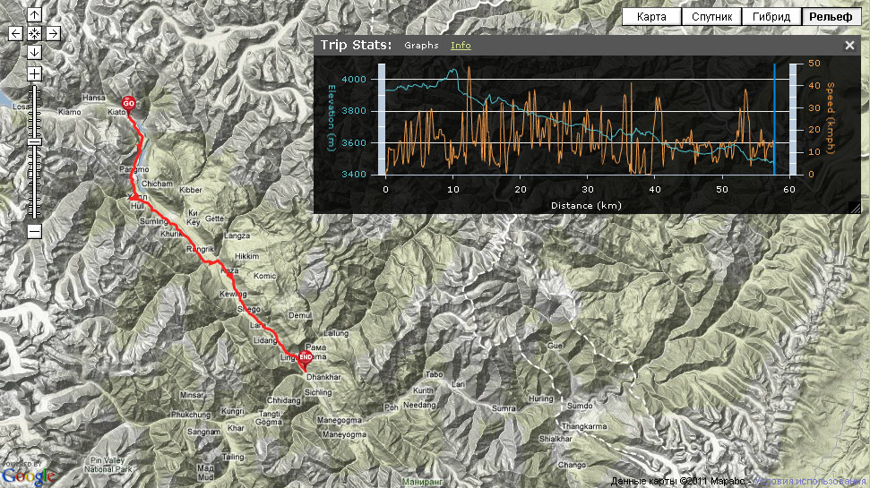
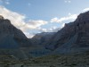 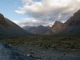  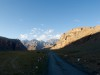 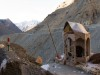 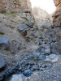 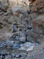 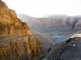 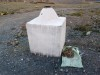 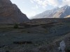 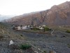 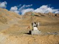 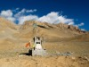
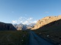 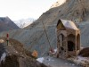 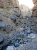 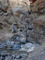 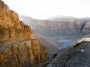 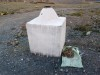 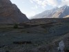 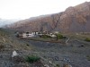 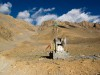 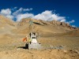  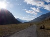 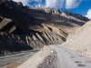 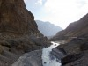 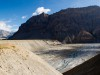 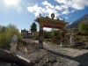 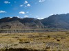
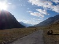 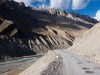 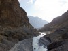 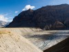 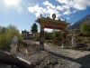 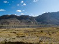  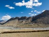 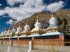 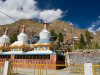 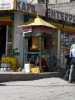 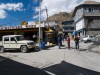 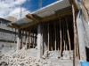 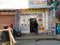 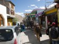 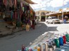 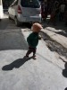 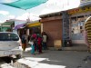 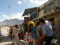 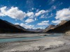 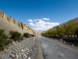 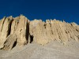
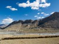 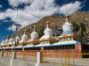 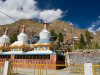 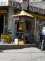 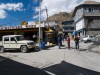 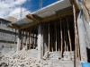 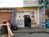 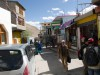 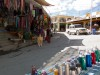 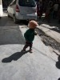 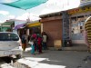 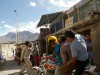 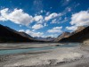 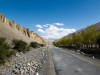 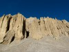  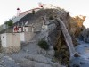
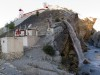